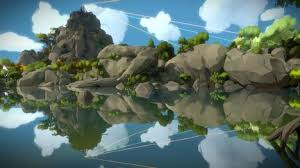

THE_WITNESS.HTML
The witness: a metaphor for life
[SPOILER ALERT]
The witness is a game developed by Thekla. You wake up to find yourself stranded in an island and as you explore the island you find puzzle panels that unlock more of the island. That's it. Jonathan blow, the head of the company, spent 7 years of his life, spending 6 million dollars to develop this game.
The island is filled with multiple areas each with their unique puzzle pannel mechanism. Consider the desert, where you have to look at the pannel in a way such that the pannel is only visible if you look at it in a unique way due to the sun's reflection.
Or look at the orchard, where you have to look at the apple's position in a tree and trace it on the panel.
These puzzles provide no reward on completion and you unlock more puzzles. That's the entire game. Go around the island, explore areas like the temple, dessert, etc... and solve puzzles for no reward. That doesn't sound very interesting.... Hey, what's that?

It's someone sleeping!
The witness is filled with little surprise/ Easter eggs waiting to be discovered. If you look a bit deeper, you will find that sometimes the environment looks like the puzzle pannel, and if you try to trace a line, surprise!
You can get through this game without witnessing all these moments and still complete the game since the game doesn't explicitly talk about the Easter eggs. It's something you figure out on your own, by observing the environment around you.
The game is not about tracing lines on a pannel, but it's about experiencing these "aha" moments.